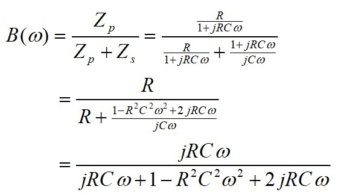
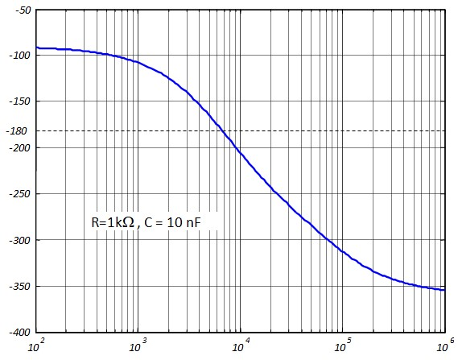

Oscillateurs Sinusoïdaux
Introduction
Le concept général est celui d’un amplificateur qui s'autoalimente grâce à un 2ème amplificateur (ou atténuateur) qui réinjecte la tension de sortie vers l'entrée.
- \(A_d\) : Fonction de transfert complexe de la chaîne directe : \( A_d = \begin{cases} A &\text{(Module = Gain)}\\ \varphi_A &\text{(Argument=Phase)}\end{cases} \)
- \(B_r\) : Fonction de transfert complexe de la chaîne de retour : \( B_r = \begin{cases} B &\text{(Module = Gain)}\\ \varphi_B &\text{(Argument=Phase)}\end{cases} \)
Condition d'oscillation :
Supposons qu'à un instant donné, nous avons la tension \(V_e\) à l'entrée de la chaîne directe, nous auront en sortie une tension d'amplitude \(AV_e\) déphasée de \(\varphi_A\) par rapport à Ve. Pour qu'il y ait oscillation, c'est-à-dire pour que le signal de sortie se maintienne dans le temps, il faut que l'amplificateur de retour ramène vers l'entrée un signal identique à Ve (en amplitude et en phase). Pour cela il faut qu'il vérifie la condition suivante :
$$A \times B = 1$$ $$\varphi_A+\varphi_B=0=\pm2\pi$$
Il faut faire attention avec les phases. Un retard de φ peut aussi être considéré comme une avance de 2π - φ.
Si on considère les deux déphasages comme :
- Des retards : \(\varphi_A \lt 0\) , \(\varphi_B \lt 0\) ⇒ \(\varphi_A + \varphi_A = -2\pi \)
- Des avances : \(\varphi_A \gt 0\) , \(\varphi_B \gt 0\) ⇒ \(\varphi_A + \varphi_A = +2\pi \)
- Un retard et une avance : ⇒ \(\varphi_A + \varphi_A = 0 \)
Il va de soit que si les phases sont exprimées en degré, 2π=360°
L'exemple de la figure ci-dessous montre les signaux d'un oscillateur tel que :
\( A=2, \varphi_A = -\frac{\pi}{2}, B=\frac{1}{2} , \varphi_B = -3\frac{\pi}{2}\)
Oscillateur à pont de Wien :
C'est un oscillateur qui utilise un pont de Wien dans la chaîne de retour.
Pour déterminer la fonction de transfert du pont de Wien on pose :

Le module et la phase dépendent de ω (fréquence). Selon le montage choisi dans la chaîne directe, l'oscillation aura lieu pour la fréquence qui vérifie les condition d'oscillation.
Si on utilise dans la chaîne directe un un amplificateur non-inverseur (\(\varphi_A=0\)) de gain 3 (\(A=3\)), on obtient une oscillation à la fréquence \( f_o=\frac{1}{2\pi R C} \)
L'oscillateur à pont de Wien est assez difficile à stabiliser. La condition A.B = 1 constitue un point de convergence instable. Si B > 1/A, l'amplitude va en augmentant jusqu'à saturation de l'amplificateur. Si B < 1/A, L'amplitude va en diminuant jusqu'à la mort du signal. Pour cette raison, le montage nécessite un contrôle actif du gain avec un élément non linéaire comme une thermistance, une diode ou un FET pour stabiliser l'amplitude.
Oscillateur à déphasage (phase shift) :
Cet oscillateur utilise un circuit déphaseur R-C dans la chaîne de retour.
Sa fonction de transfert est :
$$B(\omega)=\frac{R^3C^3\omega^3}{(R^3C^3\omega^3-5RC\omega)+j(1-6R^2C^2\omega^2)}$$le module est :
$$|B|(\omega)=\frac{R^3C^3\omega^3}{\sqrt{(R^3C^3\omega^3-5RC\omega)^2+(1-6R^2C^2\omega^2)^2}}$$La phase est :
$$\varphi_B=-Arctg{\left(\frac{1-6R^2C^2\omega^2}{R^3C^3\omega^3-5RC\omega}\right)}$$Dans la chaîne directe, le plus facile à réaliser est soit le montage non inverseur \((\varphi_A=0)\) soit montage inverseur \((\varphi_A=-\pi= -180°)\).
Si on trace la courbe de phase du déphaseur, on constate qu'elle est toujours négative et qu'il existe une fréquence pour laquelle elle est égale à -180°
On utilise donc un amplificateur inverseur dans la chaîne directe. La fréquence d'oscillation \(\omega_o\) sera la fréquence pour laquelle \((\varphi_B=-\pi= -180°)\) et on aura vérifié la condition \((\varphi_A+\varphi_B= -360°)\)
\(Arctg\left(\frac{1-6R^2C^2\omega_o^2}{R^3C^3\omega_o^3-5RC\omega_o}\right)=\pi\)
\(1-6R^{2}C^{2}\omega_{o}^{2}=0\) , \(\omega_{0}=\frac{1}{RC\sqrt{6}}\)
$$ \boxed{ f_0=\frac{1}{2\pi RC\sqrt{6}}}$$Si on injecte \(\omega_o\) dans l'expression du module du déphaseur, on obtient :
$$\boxed{B(\omega_0)=\frac{1}{29}}$$On utilise dans la chaîne directe un amplificateur inverseur de gain -29. On obtient le schéma ci-dessous. On remarquera que la 3ème résistance du déphaseur sert comme 1ère résistance de l'inverseur.
L'oscillateur à déphasage est un circuit très stable. Il n'a pas besoin de correction automatique du gain pour stabiliser l'amplitude
Oscillateurs à circuit accordé (LC) :
Les oscillateurs R-C ne permettent pas d'obtenir des fréquences d'oscillation élevées. Leur fréquence d'oscillation peut difficilement excéder le Mhz. Quand on a besoin de fréquences plus élevées, comme dans les émetteurs récepteurs AM et FM par exemple, on utilise des oscillateurs LC ou oscillateur à circuit accordé
Le principe de fonctionnement de ces oscillateurs est illustré sur la figure ci-dessous. Une fraction de la tension aux bornes du circuit accordé est réinjectée à l'entrée d'un amplificateur inverseur constituant la chaîne directe.
Pour qu'il y est oscillation, il faut que les réactances Z1 et Z2 soient du même type. Deux types de circuit d'accord sont alors possibles,
- Z1 et Z2 sont des capacités et Z3 une inductance, on obtient un oscillateur Colpitts
- Z1 et Z2 sont des inductances et Z3 une capacité, on obtient un oscillateur de Hartley
L'analyse des oscillateurs LC est compliquée, d'abord parce que l'impédance d'entrée de l'amplificateur à transistor est assez faible est vient shunter le circuit accordé et complique l'expression du gain de boucle AxB. D'un autre coté, puisque ces oscillateurs sont utilisés pour des fréquences élevées, le schéma équivalent du transistor en basses fréquences n'est plus utilisable, il faut le remplacer par le schéma équivalent hybride en π dit schéma de Giacoletto. En règle générale, on peut utiliser les résultats groupés dans le tableau suivant :
Pour les oscillateur Colpitts: \( C=\frac{C_1C_2}{C_1+C_2} \)
Pour les oscillateurs Hartley, \( L=L_1+L_2+2M \) , (M: Inductance mutuelle)